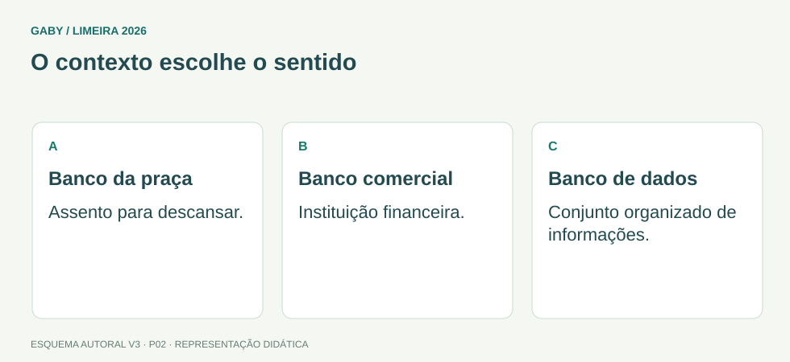

Objetivos do módulo
- Reconhecer sinônimos e antônimos em contexto.
- Perceber que sinonímia raramente é absoluta.
- Avaliar se uma substituição preserva sentido e registro.
O contexto escolhe o sentido

Descrição em texto do esquema
- Banco da praça: Assento para descansar.
- Banco comercial: Instituição financeira.
- Banco de dados: Conjunto organizado de informações.
Oficina visual · aplique o esquema
Em “o servidor apresentou uma resposta precisa”, “precisa” pode ser substituída por “necessita”? Explique e proponha uma substituição adequada.
Atividade autoral complementar da V3. Registre sua resposta; a resolução está no arquivo de gabarito e revisão.
Mapa do conteúdo
1. Sinonímia depende do contexto
Sinônimos são palavras de sentido próximo, não necessariamente idêntico em todos os contextos. “Casa” e “lar” podem se aproximar, mas “lar” traz frequentemente componente afetivo. “Começar” e “iniciar” são próximos, porém o registro e a construção sintática podem variar.
Em prova, a pergunta normalmente não é “estas palavras são sinônimas no dicionário?”, e sim “a substituição mantém o sentido neste trecho?”.
2. Antonímia e oposição
Antônimos expressam sentidos opostos, mas há tipos diferentes de oposição. “Quente/frio” admite gradação; “vivo/morto” tende à complementaridade; “comprar/vender” descreve uma relação inversa. Identificar o tipo ajuda a interpretar.
| Relação | Exemplo | Observação |
|---|---|---|
| Gradual | quente/frio | há estados intermediários |
| Complementar | presente/ausente | um exclui o outro no contexto |
| Recíproca | comprar/vender | ações vistas de polos diferentes |
3. Polissemia e contexto
Uma mesma palavra pode assumir sentidos diferentes. “Banco” pode ser instituição financeira ou assento; “cabeça” pode ser parte do corpo ou líder. O contexto seleciona o sentido relevante.
4. Precisão, intensidade e registro
Duas palavras próximas podem ter intensidades distintas: “irritado” e “furioso” não são equivalentes em grau. Também há diferenças de formalidade: “falecer” e “morrer” compartilham núcleo semântico, mas pertencem a registros diferentes.
Exemplos resolvidos passo a passo
Exemplo 1
Situação: “O servidor apresentou uma resposta concisa.” Qual termo preserva melhor o sentido de “concisa”?
Exemplo 2
Situação: “A medida foi provisória.” Qual antônimo é adequado?
Pegadinhas e erros frequentes
- Trocar por palavra apenas parecida na forma, não no sentido.
- Ignorar intensidade semântica.
- Desconsiderar o registro formal/informal.
- Achar que sinônimos funcionam em qualquer frase.
Resumo de prova
- Sinonímia é contextual e geralmente parcial.
- Antônimos podem ser graduais, complementares ou recíprocos.
- Polissemia exige contexto.
- Substituição correta preserva sentido, intensidade e registro.
Exercícios do módulo
Resolva sem consultar o arquivo de gabarito. As questões são autorais e construídas para treinar os conceitos do edital.
- agressiva
- prolixa
- breve
- confusa
Fonte: referência de estudo.
- eventual
- definitiva
- rápida
- antiga
Fonte: referência de estudo.
- podem variar conforme contexto e registro
- têm grafia semelhante
- são necessariamente antônimos parciais
- são sempre intercambiáveis
Fonte: referência de estudo.
- pleonasmo
- eufemismo
- antonímia
- polissemia
Fonte: referência de estudo.
- nenhuma relação
- menor intensidade
- maior intensidade
- sentido oposto
Fonte: referência de estudo.
- sentido e registro
- apenas aproximadamente o referente, mas mudaria o registro
- exatamente a formalidade
- nenhum sentido
Fonte: referência de estudo.
- comprar/vender
- quente/frio
- entrar/sair
- vivo/morto
Fonte: referência de estudo.
- presente/ausente
- alto/baixo
- comprar/vender
- claro/escuro
Fonte: referência de estudo.
- preferir termos raros
- comparar só o dicionário
- verificar a frase no contexto
- escolher a palavra mais longa
Fonte: referência de estudo.
- temerária
- cautelosa
- apressada
- inconsequente
Fonte: referência de estudo.
Quando terminar, abra Português 02 - Sinônimos, Antônimos e Relações de Sentido - Gabarito e Revisão.
Checklist de domínio
- ☐ Reconhecer sinônimos e antônimos em contexto.
- ☐ Perceber que sinonímia raramente é absoluta.
- ☐ Avaliar se uma substituição preserva sentido e registro.
Meta do módulo: 80% ou mais nas questões, sem depender de consulta.
Referências e conteúdos auxiliares
- Inep — Matrizes e escalas do SaebApoio às habilidades de leitura e interpretação. Não corresponde à matriz do concurso de Limeira.
- Presidência da República — Manual de Redação, 3ª ediçãoClareza, redação oficial, concordância, regência e pontuação. Referência de apoio; modelos locais podem ter regras próprias.
Referências externas de apoio consultadas para a V3 em 27/09/2026. A origem das questões é o material autoral do projeto; estes links não indicam que uma instituição publicou ou validou os exercícios. As páginas externas precisam de internet. Em informática, confira a versão do programa; em legislação, observe o recorte e as regras de atualização do edital.